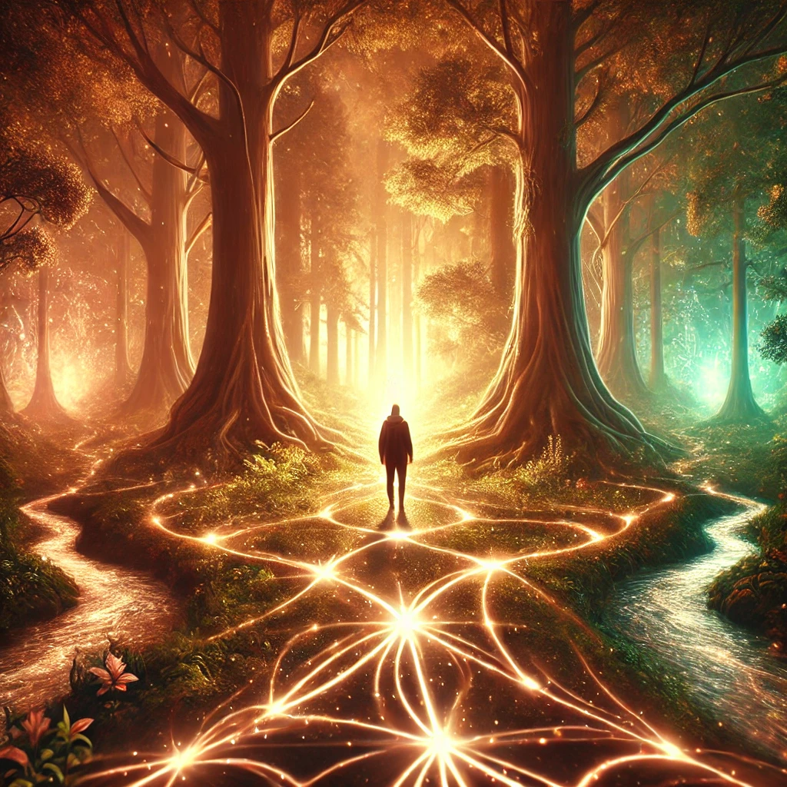

The forest around you hums with life as you step onto a glowing path that seems to appear out of nowhere. The ground beneath your feet pulses softly, and the light guides your steps, weaving through towering trees and cascading streams. It feels as though the path is alive, leading you with purpose.
As you walk, the world around you begins to shift. The air grows warmer, and the light intensifies, creating patterns that dance and shimmer in front of you. Whispers echo in your mind, gentle and melodic:
“The path you follow reflects your intentions. Trust it, and it will lead you to what you seek. Resist it, and it will show you the truth of your fears.”
The glowing path splits ahead, each branch offering a different direction and energy. The choice is yours.

Which direction will you take?